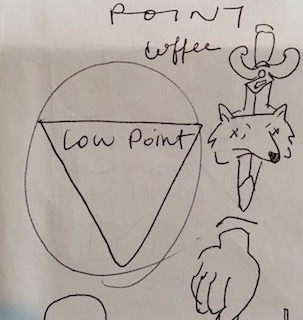
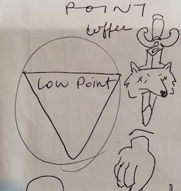

My Process
 

Low Point Coffee Co.
Sketches
Brainstorming sketches! I always start with pen and paper.
The concept I was exploring was how your highest point
can be your lowest point, and your lowest point your highest.
Hand Carved & Stamped Logo
Carved out of soft rubber, stamped with white fabric paint.
We opted for the cleaner version in the end, but I still love this one.
You can’t beat paint on paper.